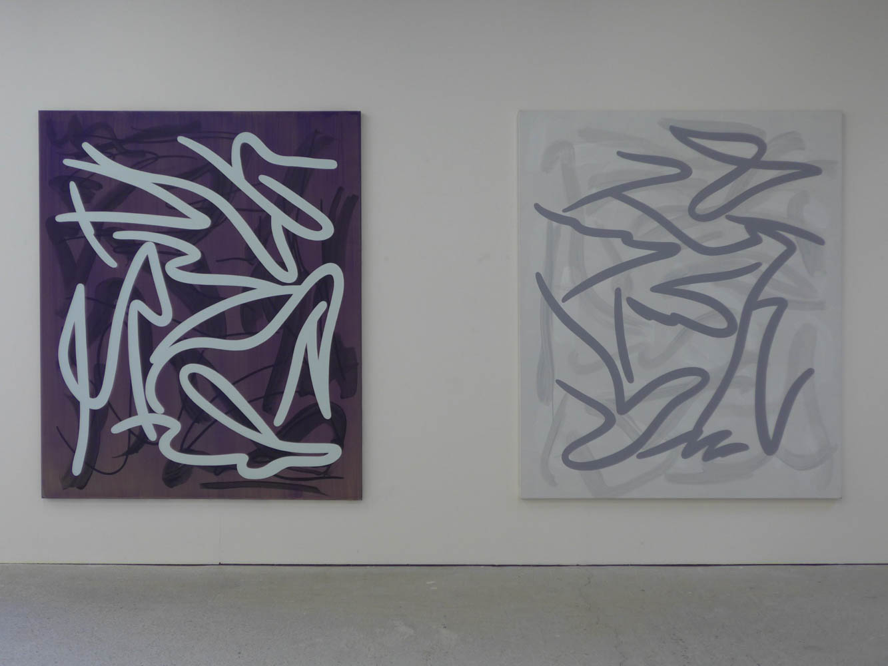
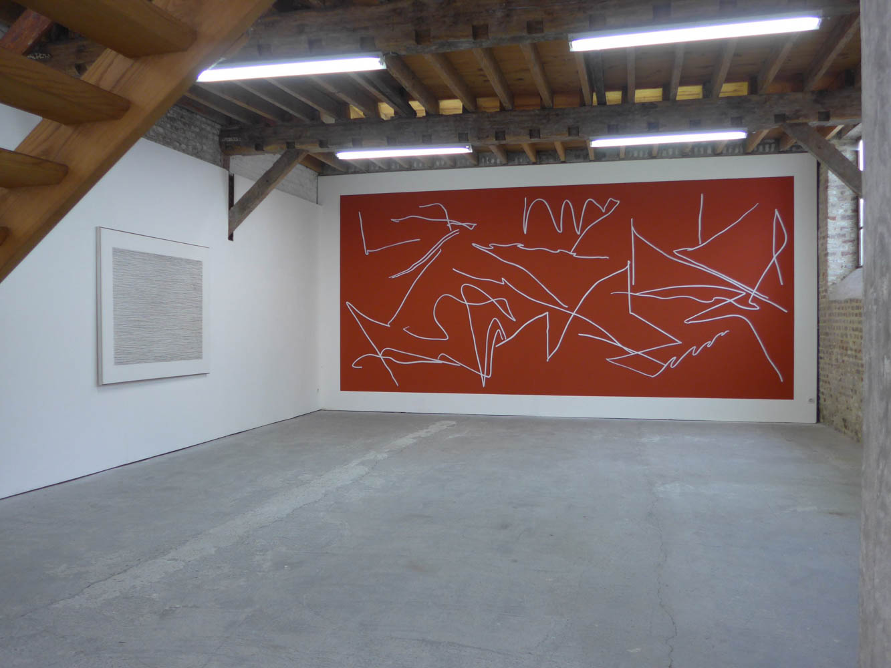
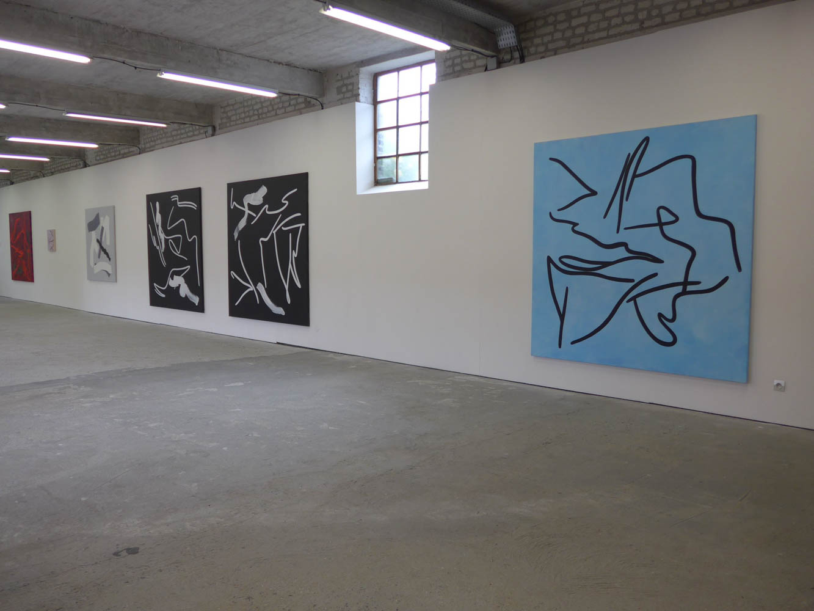
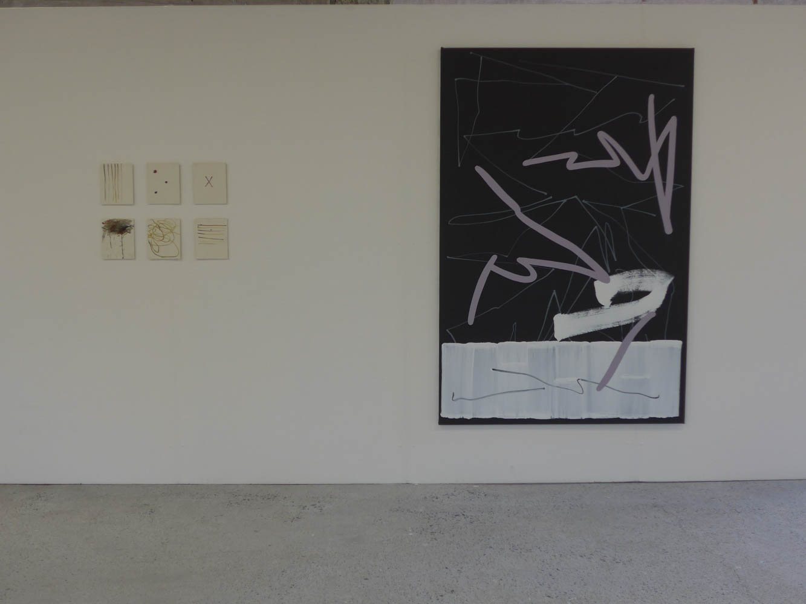
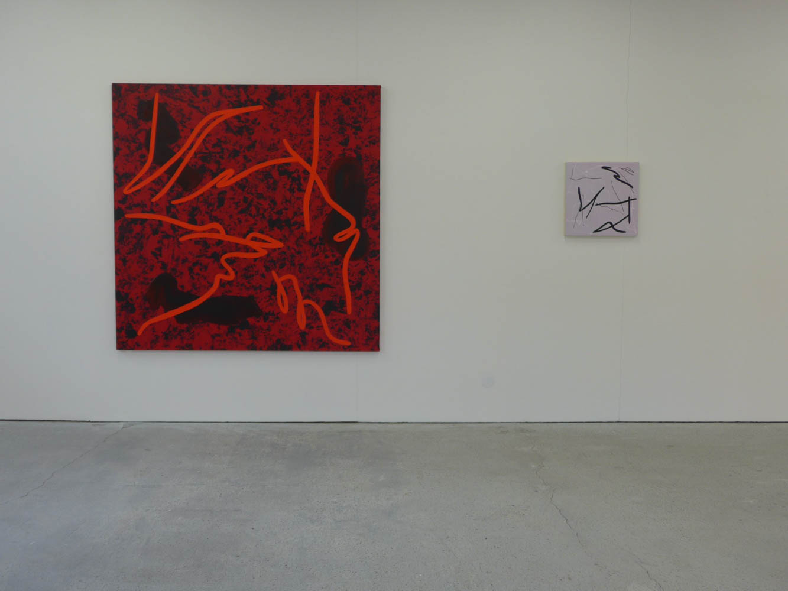
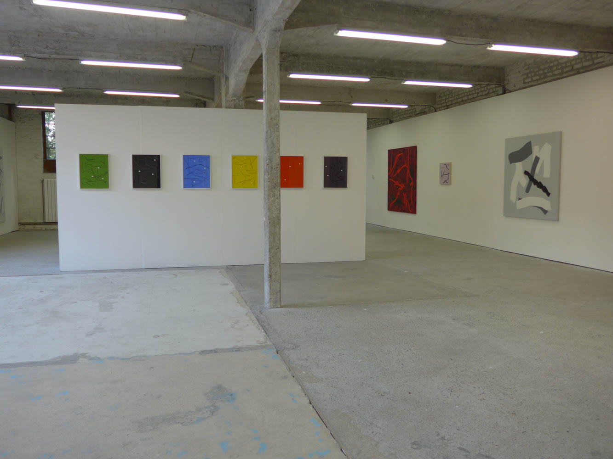

<!DOCTYPE html>
<html lang="fr">

<head>
    <meta charset="UTF-8">
    <meta http-equiv="X-UA-Compatible" content="IE=edge">
    <meta name="viewport" content="width=device-width, initial-scale=1.0">
    <link rel="stylesheet" href="../../sass/main.css">
    <title>Jean-Marc Thommen</title>
</head>

<body>
    

    <header class="header">
        <a href="../../accueil.html">
            <h1>L'H du Siège <br> centre d'art contemporain</h1>
        </a>
        <nav>
            <a href="../../accueil.html">Accueil</a>
            <a href="../../centreArt.html">Le centre d'art</a>
            <a href="../../archives.html">Archives</a>
            <a href="../../editions.html">Editions</a>
            <a href="../../mediation.html">Médiation</a>
        </nav>
    </header>

    <figure class="expoFigure">
        <div class="imageContainer">
            
        </div>
    </figure>

    <main>

        <section>
            <h2>Jean-Marc Thommen</h2>
            <h4>l’ébauche d’un monde</h4><br><br>
            <h5>Blue in Green1</h5>

            <!-- Partie visible -->
            <p class="extrait">« L’ébauche d’un monde », un tel titre pourrait faire office de manifeste. En écrivant
                sur des chutes de papier
                assemblées au gré du
                hasard, Jean-Marc Thommen a abouti à ce cut-up fortuné, « cela
                a produit ce nom qui a tourné dans ma tête2 ». L’ébauche conduit
                au verbe « ébaucher ». Celui-ci ouvre plusieurs voies : « dégrossir
                la matière » ; « commencer (un geste, un mouvement, “etc.”) sans
                l’exécuter jusqu’au bout » ; « commencer à faire apparaître3
                . » Le
                principe de l’apparition n’est pas anodin en peinture, il l’est d’autant
                moins quand il est question de peinture abstraite. Le peintre est actif,
                et il commence à faire apparaître un monde – et non pas le monde.
                Une fois encore, l’étymologie du terme « monde » est riche, d’une
                simple parure à l’organisation de l’univers, du globe terrestre à la
                communauté des personnes le peuplant. « Cela me plaisait aussi
                de penser que le tableau, l’œuvre en général, c’est tout un monde »,
                précise Jean-Marc Thommen</p>
            <br>

            <!-- Suite du texte -->
            <p class="textComplet">Cette impression est prégnante quand on pénètre dans son atelier
                à Montreuil. Ici, des dessins, et une peinture en attente, là, quelques
                cartes postales accrochées qui l’accompagnent depuis longtemps,
                un Louvre portatif avec le Portrait de Baldassare Castiglione de Raphaël, l’Autoportrait de Poussin ou
                le Portrait
                d’homme de Philippe
                de Champaigne. Les noms de ceux qui l’ont marqué et le marquent
                toujours fusent, Richard Tuttle, Eva Hesse, Pierre Buraglio, Pierre
                Dunoyer, Olivier Mosset, Robert Ryman, Cy Twombly… La peinture
                et son histoire s’imposent, entre élévation et pesanteur. « Ce qui
                peut stimuler mon geste, c’est le sentiment véritable que la surface
                contient toute sorte de précédents,» explique Jean-Marc Thommen.
                Il affectionne d’ailleurs la réflexion de Deleuze selon laquelle la toile
                porte déjà un ensemble d’images, la crainte de la page blanche en
                littérature étant déviée en peinture : « C’est une erreur de croire que
                le peintre est devant une surface blanche. […] Il y a des clichés psychiques autant que physiques,
                perceptions toutes
                faites, souvenirs,
                fantasmes. Il y a là une expérience très importante pour le peintre :
                toute une catégorie de choses qu’on peut appeler “clichés” occupe
                déjà la toile avant le commencement4
                . » Est-ce là qu’il faut tenter
                de trouver la volonté de Jean-Marc Thommen de faire le vide, qui
                accompagne toute mise en œuvre ? <br><br>
                La série de dessins de 1991-1992 avait été conçue de cette façon, en
                cherchant à épuiser mentalement ce qui lui passait par la tête. Le
                faire aboutissait à l’épuisement, dans une réalisation qui croisait
                dessin automatique et appropriations minimalistes. Léonard de Vinci
                affirmait que les stries des murs pouvaient révéler à qui les regardait de près des batailles, des
                paysages ou des
                visages. Ici, formes
                organiques et tâches convoquent l’imagination à la façon du test de
                Rorschach. Cette voie ne convenait pas, encore trop empreinte des
                images, à travers les projections ou les images mentales : « ce n’était
                pas tellement l’épuisement du dessin qu’une forme d’épuisement de
                l’image d’une certaine façon. […] C’était des gammes. Il y avait une pauvreté de moyens qui
                m’intéressait. Une
                aquarelle, le papier le plus pauvre, mais pas
                plus. » Sa pratique se déporte alors plus du
                côté des tableaux. <br>
                Une vingtaine d’années après, Jean-Marc
                Thommen entame un ensemble de dessins qu’il intitule Trois points. Un protocole
                ternaire se met en place. De même format,
                ils sont travaillés par trois, sur table. Le
                premier temps est celui de la couleur qui
                est systématiquement différente. Le deuxième temps est celui du dessin libre à la
                craie grasse. Lorsqu’il les juge équilibrés,
                intervient le troisième et dernier temps : il
                appose de manière arbitraire trois points qui
                viennent clore l’exécution à la manière de
                trois sceaux. Pensés comme des dessins autonomes, comme des objets clos, ils forment
                une suite potentiellement infinie, tel un
                « inventaire de couleur et de dessin libre. »
                L’œil reconstitue des correspondances de l’un
                à l’autre, recrée des rythmes, des chemins.
                Coïncidence : lors de l’entreprise de « Machine à remonter le temps » que suppose
                l’exposition Parcours à L’H du Siège, Jean-Marc Thommen s’est repenché sur ses premières recherches
                automatiques du
                début
                des années 1990. Réminiscence facétieuse,
                il a retrouvé parmi elles un dessin composé de trois points. Le point est au cœur de
                nombreuses réflexions artistiques, parmi
                lesquelles celles de Paul Klee. Il précisait
                dans sa grammaire des éléments visuels que
                « Le point n’est pas sans dimensions. C’est
                un élément de la surface infiniment petit
                qui, en tant qu’agent, exécute le mouvement
                zéro, c’est-à-dire qu’il se contente d’exister.
                […] Dès que le crayon touche la feuille de papier, la ligne apparaît. »
                Cette ligne est vibrante dans les deux grands dessins de 1998 qui sont
                empreints des gestes minimalistes d’Agnes Martin ou de Sol LeWitt.
                Le protocole est engagé : aller de gauche à droite en tentant de tendre
                la ligne, dans la mesure du possible. « C’est encore l’image de la mer
                qui traversait mon esprit. C’était une façon de me séparer aussi des
                images en réduisant la mer à un dessin aussi épuré », explique Jean-Marc Thommen. Et le geste est
                ressenti, plus que
                l’image.
                La question du temps est essentielle. Il y a une réelle considération
                pour le moment qui précède l’exécution et celui de l’exécution, l’exercice physique de la durée. Les
                premiers dessins automatiques reposaient sur la vitesse. Les peintures relèvent d’une
                autre temporalité,
                le temps s’étire. La matière en témoigne, les couleurs se recouvrent,
                les structures se superposent, la transparence est récurrente. Pour
                les dessins simultanés ou les dessins muraux, le temps s’accélère.
                Jean-Marc Thommen établit alors un protocole en trois séquences : le
                temps de la couleur au mur, celui du tracé et celui de la « rétroaction5
                »
                durant lequel le tracé est rehaussé. Commencés il y a quatre ans, les
                « dessins performatifs », improvisés, s’éloignent de l’espace clos du
                dessin. La plupart sont d’un format allongé qui renvoie à l’écran et
                au format panoramique de la peinture d’histoire. <br>
                Depuis les premiers travaux du début des années 1990 au dessin mural in situ, le cheminement est
                multiple. Une histoire
                personnelle de
                la ligne s’établit, de l’horizontalité vibrante jusqu’aux lignes courbes,
                brisées ou serpentines, qu’elles soient peintes ou dessinées. Toute une
                réflexion sur le vide se met en place : « Je dessine le trait, mais surtout
                le vide. Je dessine simultanément la matérialité du trait et le contour
                du vide.» L’espace s’agrandit également. Les premiers dessins étaient
                volontairement à l’échelle de la main, créant un rapport d’intimité,
                les tableaux sont à l’échelle du corps, et le dessin mural le dépasse
                pour envahir l’espace. <br><br>
                Gestes de dépassement <br>
                du dépassement, <br>
                surtout du dépassement, lit-on chez Henri Michaux (Mouvements),
                dont les dessins fascinaient et fascinent encore Jean-Marc Thommen.
                Ces gestes sont ceux qui conduisent à « L’ébauche d’un monde », dont
                la forme reste ouverte. <br><br>
                Fanny Drugeon <br><br>
                <span class="contexte">1. Ce morceau de l’album Kind of Blue de Miles Davis est un clin d’œil
                    chromatique à l’importance tant de la couleur
                    que de la musique pour Jean-Marc
                    Thommen. <br>
                    2. Les citations sont issues de deux entretiens avec Jean-Marc Thommen, le 24
                    octobre 2016 et le 7 janvier 2017. <br>
                    3. Alain Rey (dir.), Dictionnaire historique de la langue française, Le Robert. <br>
                    4. Gilles Deleuze, Francis Bacon. Logique de la Sensation, éditions de La Différence, 1981, p.
                    83-84. <br>
                    5. Dans un entretien avec Philippe Cyroulnik, Jean-Marc Thommen cite le compositeur György Ligeti :
                    « “Je pose mes
                    doigts sur le clavier et j’imagine de la
                    musique. Mes doigts reproduisent cette image mentale au fur et à mesure
                    que j’appuie sur les touches, mais cette reproduction est tout à fait inexacte :
                    une rétroaction se produit entre la conception musicale et l’exécution tactile
                    et motrice.” J’y vois une correspondance dans certains de mes processus plastiques qui consistent à
                    reprendre un
                    premier tracé au pinceau, comme une
                    rétroaction », dans À main levée, Le VOG/Le 19, 2014, p. 8.</span>

            </p>
            <br>
            <a class="lirePlus">Lire la suite</a>
        </section>


        <section class="vueExpo">
            <h2>Vues d'exposition</h2><br>

            <div class="carouselExpo">

                <div class="image-popup">
                    
                </div>

                <div class="image-popup">
                    
                </div>

                <div class="image-popup">
                    
                </div>

                <div class="image-popup">
                    
                </div>

                <div class="image-popup">
                    
                </div>

                <div class="image-popup">
                    
                </div>

                <div class="overlay"></div>

            </div>

        </section>

    </main>


    <footer>
        <p class="footerLeft">L’H du Siège <br>
            15 rue de l’Hôpital de Siège <br>
            59300 Valenciennes</p>

        <p class="footerCenter"> Tél. : +33 (0)3 27 36 06 61 <br> email : hdusiege@free.fr</p>

        <div class="footerRight">
            <a href="https://twitter.com/LHduSiege">Twitter</a>
            <a href="https://www.facebook.com/hdusiege.galerie/">Facebook</a>
            <a href="https://www.instagram.com/galerielhdusiege/">Instagram</a>
        </div>
    </footer>

    <script src="../../script.js"></script>
</body>

</html>